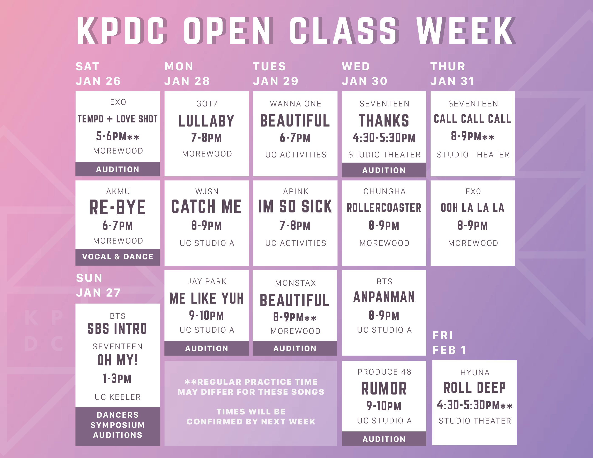

Official Subunits
About
Official subunits are dances that anybody can join at the beginning of the semester and are performed at the KPDC Showcase. There is a matching process to ensure fair assignments and to prevent overflow. Note you must be AVAILABLE on TBA for the KPDC Showcase in order to be part of an official subunit.
Open Subunits
Open subunits are first-come first-serve, meaning the sooner you fill out the subunit ranking form the more likely you will get into one of the open subunits. Open Subunits are a great way to be a part of dance if it's your first time.
Open Subunits for Spring 2019
Lullaby by GOT7
Catch Me by WJSN
Beautiful by Wanna One
I'm So Sick by Apink
Roller Coaster by Chungha
Anpanman by BTS
Call Call Call by Seventeen
Ooh La La by EXO
Roll Deep by Hyuna
Audition Subunits
Audition subunits are more skills-based than open subunits so you will need to attend an audition for each audition subunit you are interested in.
Audition Subunits for Spring 2019
Beautiful by Monsta X
Re-Bye by Akmu
Me Like Yuh by Jay Park
Tempo + Love Shot by EXO
Thanks by Seventeen
Rumor by Produce 48
DS Subunit
This subunit performs at both the KPDC and the DS showcases. You will need to attend the DS subunit audition for acceptance into this subunit.
DS Subunit for Spring 2019
SBS Intro by BTS + Oh My! by Seventeen
Subunit matching is starting TBA!
The subunit ranking form will be released on TBA at TBA! Please fill it out by TBA!
Schedule
Note that all subunit practices will be at the same time and locations as the open classes listed below unless otherwise noted.
Subunit Ranking Form
Subunit Matching Process
When/Where?
Subunit open classes will be starting TBA. Refer to the schedule above for specific time/date and location for each subunit open class. Attend open classes for your favorite dances during the week. The times and places listed will be the subunit's normal practices throughout the semester.
How do I Join an Open Subunit?
1. Show up to any open subunit class or audition during subunit matching week (does not have to be your top choice)
2. Fill out the subunit ranking form by 12:00 PM Sunday, February 3. The form will be released on Saturday, February 2 at 11:59pm.
3. NEW: We have changed open subunit maching. Acceptances into open subunits used to be determined solely on a first come, first serve basis. This has caused a chaotic scramble to sign up has led to some unfair practices and complaints. Now, acceptances into open subunits are determined by several factors. We will give priority to those who attend the open class of the subunit(s) they rank. Then, we will base acceptance on a first come, first serve basis. If you attempt to fill out the form more quickly by putting in inaccurate information, it will count against you. If you do not get accepted into a subunit you will be placed on a waitlist in case somebody drops a subunit or a group gets expanded. Note that filling out the form early does not decide which subunit you will be in but it will give you a higher chance of getting into a subunit. Also note that historically, we receive hundreds of applications within the first 5 minutes, so please make sure to fill out the form as soon as it comes out. The sooner you fill out the form the more likely it is that you will get into your preferred subunit. Please try to rank as many dances as possible so that you still get a subunit even if it isn't your top choice.
NOTE: You can only be in a MAXIMUM OF ONE open subunit.
How do I Join an Audition Subunit?
1. Show up to the audition for the audition subunit you are interested in.
2. Fill out the subunit ranking form by TBA. The form will be released on TBA.
3. Acceptances into Audition subunits are determined by skills at the audition.
How do I Join the DS Subunit?
1. Show up to the DS subunit audition which will be happening on TBA from TBA in TBA.
2. Acceptances into DS subunits are determined by skills at the audition.
NOTE: KPDC DS Subunit does not require members to fill out the subunit ranking form.
How many dances can I be in?
You are limited to ONE Open Subunit. However, there is no cap for the total number of dances so you may join as many Audition Subunits and projects as you'd like.
When do Results come out?
Results will come out sometime the week before the first subunit practice begins. Audition results will come out first.
What is the subunit practice schedule and attendance policy?
Subunits typically practice for one hour a week at the same time and location every week. The subunit leader sets the attendance policy, but there is a baseline attendance policy. Multiple absences and consistent tardiness can lead to being dropped from a subunit. Please make sure you can make the subunit practices before ranking your subunits. Additionally, choosing to drop a subunit before mid-semester can lead to lower subunit matching priority, and temporary blacklisting if dropped after mid-semester.
Contact
You can reach our Subunit Coordinator, Minji Kim, at minjik3@andrew.cmu.edu.